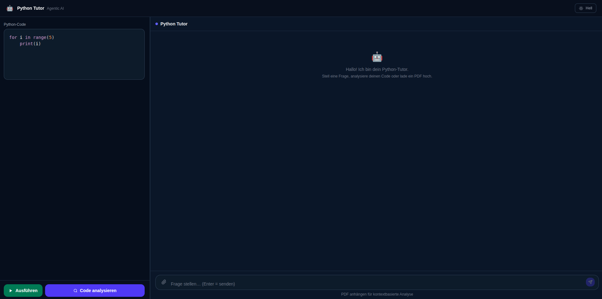

LangChain Agent
Agentic AI Python Tutor — Sprint 2
Was haben wir gebaut?
Next.js Frontend — Student schreibt Code, stellt Fragen, lädt PDF hoch und sieht sofort die Antwort des Agents.
Empfängt Requests vom Frontend und leitet sie an den Agent weiter. Endpunkte: /analyze, /chat, /run, /upload
Orchestriert den Tool-Loop — LLM entscheidet selbst welche Tools aufgerufen werden bis die Antwort fertig ist.
4 Tools: explain · debug · exercise · rag — jedes mit eigenem LLM-Prompt.
GPT-4o über die OpenAI API (Standard) — Ollama/llama3.2 als lokaler Fallback wenn kein API Key gesetzt.
PDF → Chunks mit Seitennummer → FAISS Vector Store. Seitenreferenz ("Seite 9") direkt abrufbar + semantische Suche kombiniert.
Was der Student sieht und macht
Code-Editor
Python-Code schreiben und direkt im Browser ausführen
Code analysieren
Ein Klick — Agent erklärt, findet Fehler, gibt Übung
Chat mit dem Tutor
Fragen stellen mit vollem Code-Kontext — nur Python-Fragen erlaubt
PDF hochladen
Eigenes Kursmaterial einbinden — Agent nutzt es bei Antworten
Code ausführen
Python-Code wird sicher im Backend ausgeführt, Output sofort angezeigt
„In Editor" Button
Python-Code aus Chat-Antworten per Klick in den Editor übernehmen und sofort ausführen
Material-Badge im Header
Nach PDF-Upload zeigt der Chat-Header den Dateinamen — sichtbar dass Lernmaterial aktiv ist

FastAPI — warum ideal für KI-Agents
⚡ Async — kein Blockieren
upload-materialistasync def— PDF-Upload blockiert den Server nicht- Chat, Analyze und Run sind
sync def— LLM-Calls laufen direkt durch
🛡️ Pydantic Validierung
- Automatische Typprüfung bei jedem Request
- Fehler werden sofort erkannt — kein falscher Input zum Agent
🎯 Klare Trennung
- Jeder Endpoint hat eine Aufgabe — kein gemischter Code
- Agent-Logik bleibt im Backend — Frontend sendet nur Daten
🔒 Sicherheit
- Code-Ausführung isoliert mit Timeout (10 Sekunden)
- Off-Topic Classifier blockt irrelevante Anfragen
- Regex erkennt „Seite 9"-Referenzen → direkte Seitensuche statt FAISS
LangChain Agent — wie er denkt
Student schickt Code
Code als Nachricht an den Agent
LLM (GPT-4o) liest Prompt + Tools
_SYSTEM_PROMPT + tools = [explain, debug, exercise, rag]
Enthält die Antwort tool_calls?
LangChain prüft das Antwort-Objekt des LLM
JA — Tool ausführen
LangChain ruft Tool auf
Ergebnis → zurück ans LLM
NEIN — Loop stoppt
messages[-1]
→ _parse_agent_output()
→ Antwort an Student
tool_calls nicht leer ist
⚙️ _SYSTEM_PROMPT
Steuert Sprache, Tonalität und Antwortformat — definiert das Verhalten des Agents
📦 Was sind tool_calls?
Das LLM antwortet nicht mit Text — sondern mit einem JSON-Objekt:
"tool_calls": [{
"name": "explain_code_tool",
"args": { "code": "..." }
}]
LangChain liest dieses Feld und führt das Tool aus. Ist tool_calls leer → Loop stoppt.
Die 4 Tools des Agents
Erklärt den Code auf Deutsch in 3–4 Sätzen. Was macht er, wie funktioniert er, einfache Sprache für Anfänger.
ErklärungAnalysiert den Code auf Syntax- und Logikfehler. Gibt Fehlertyp und konkreten Verbesserungsvorschlag zurück.
Fehler findenGeneriert eine passende Übungsaufgabe basierend auf dem Code des Studenten — maximal 3 Sätze, direkt anwendbar.
ÜbungSucht im FAISS Vector Store nach relevanten Stellen. Im /analyze-Agent verwendet. Im /chat läuft _get_rag_context() direkt: erst Seitensuche, dann semantische FAISS-Suche — Ergebnisse kombiniert.
Wie das LLM das richtige Tool wählt: Jedes Tool hat einen Docstring — dieser Docstring ist die Beschreibung die das LLM bekommt. Das LLM liest ihn und entscheidet selbst. Guter Docstring = korrektes Tool.
PDF → Wissen für den Agent
1 · PDF hochladen & Text extrahieren
POST /tutor/upload-material → extract_pages() gibt (Seitennummer, Text) Tupel pro Seite zurück
2 · Splitten & Embeddings
split_pages() → (Chunk-Text, Seitennummer) · Jeder Chunk wird als Vektor eingebettet
3 · Speichern & Suchen
FAISS Vector Store lokal · Bei Anfrage: Seitenzahl erkannt → get_page() + FAISS-Semantiksuche kombiniert
Was ist RAG & wie funktioniert Ähnlichkeitssuche?
Das LLM sucht zuerst im eigenen Material nach relevanten Stellen. Fragen und Chunks werden als Vektoren gespeichert — FAISS findet die thematisch nächsten in Millisekunden.
Optional · GPT-4o Standard · Ollama Fallback
rag_tool nur aktiv wenn FAISS-Index vorhanden. Standard: OpenAI GPT-4o. Fallback: Ollama/llama3.2 lokal wenn kein API Key gesetzt.
Seitenreferenz + Semantik kombiniert
„Erkläre Seite 9" → Regex extrahiert Seitennummer → get_page() direkt + FAISS-Suche parallel — Ergebnisse zusammengeführt, Duplikate entfernt.
Agent vs. ChatGPT / Chatbot
ChatGPT / Chatbot
Reagiert auf Text — antwortet mit Text
LLM generiert Antwort direkt — kein Werkzeug, keine Zwischenschritte
Keiner — eine Frage, eine Antwort, fertig
Ein freier Textblock — keine feste Struktur, keine spezialisierten Aktionen
Unser LangChain Agent
Plant, handelt, überprüft — eigenständig
LLM entscheidet welche Tools gebraucht werden — explain · debug · exercise · rag
Läuft bis tool_calls leer ist — mehrere Runden möglich
5 strukturierte Felder: Erklärung · Fehler gefunden · Fehlertyp · Hinweis · Übung